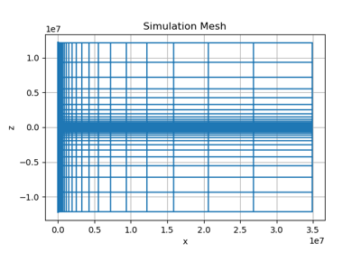

In Publication#

Heagy et al., 2017 1D RESOLVE and SkyTEM Bookpurnong Inversions
Heagy et al., 2017 1D RESOLVE and SkyTEM Bookpurnong Inversions

Heagy et al., 2017 1D RESOLVE Bookpurnong Inversion
Heagy et al., 2017 1D RESOLVE Bookpurnong Inversion



EM: Schenkel and Morrison Casing Model
EM: Schenkel and Morrison Casing Model